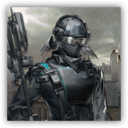

预备干员 - 辅助 Reserve Operator - Supporter
近战 物理；普通 类人（任意；助战者）
|  |
罗德岛预备干员。来自罗德岛的预备干员，尚且缺乏经验，但在经过一定的战术训练和磨合后可以执行更加复杂困难的任务。 辅助。该类型干员属于功能型支援单位，通过多样手段增强我方干员的作战效率，削弱敌人等手段影响战局。虽然直接输出能力有限，但能显著改变战场节奏。适合用于拖延敌方推进、配合主力输出或破解特殊机制。 |
“果然，我就知道又得加班了。”
预备干员 - 辅助丨Reserve Operator - Supporter
中型类人（任意；助战者），中立
AC 13（轻甲）
先攻 +0（10）
HP 6×等级（等级×d6的生命骰）
速度 30 尺
| 调整 | 豁免 | ||
|---|---|---|---|
| 力量 | 10 | +0 | +0 |
| 智力 | 12 | +1 | +1 |
| 调整 | 豁免 | ||
|---|---|---|---|
| 敏捷 | 10 | +0 | +0 |
| 感知 | 12 | +1 | +1 |
| 调整 | 豁免 | ||
|---|---|---|---|
| 体质 | 10 | +0 | +0 |
| 魅力 | 16 | +3 | +3 |
技能 奥秘+1+PB，医药+1+PB，洞悉+3+PB，游说+3+PB
感官 黑暗视觉30尺，被动察觉11+PB
语言 通用语，以及一门任意语言
PB 等于其指引者的加值
特质 Traits
助战抗性 Retainer Resistance。助战者进行任何豁免检定时，均可以加上指引者的熟练加值。
5级：协战信标 Coordinate Beacon（3次/日）。当辅助的招牌攻击命中时，目标5尺内生物可以采取反应，对目标发动近战武器攻击。
动作 Actions
招牌攻击：凝滞击 Energy Bullet。远程或近战攻击检定：+3+PB，触及5尺或射程120尺。命中：1d4力场伤害，且目标的移动速度降低10尺，直到其回合结束。此攻击在5级（2d4），11级（3d4）以及17级（4d4）时额外造成1d4力场伤害。
5级：激励气场 Inspiration Field（3次/日）。辅助周围30尺可以听见其声音的盟友，在攻击检定上具有优势，持续至辅助下回合开始。
7级：削弱领域 Weakening Zone（1次/日）。敏捷豁免检定：DC10+PB，源自辅助60尺内可见一点的20尺球状区域内的每个敌人。失败：目标陷入束缚状态，且无法受益于隐形状态，直到辅助下回合开始。
反应 Reactions
3级：辅助助力 Supporter Assisitance（3次/日）。触发：辅助周围30尺内的可见盟友在一次D20检定中失败。响应：这次检定结果获得+1d6加值，这可能导致检定成功。